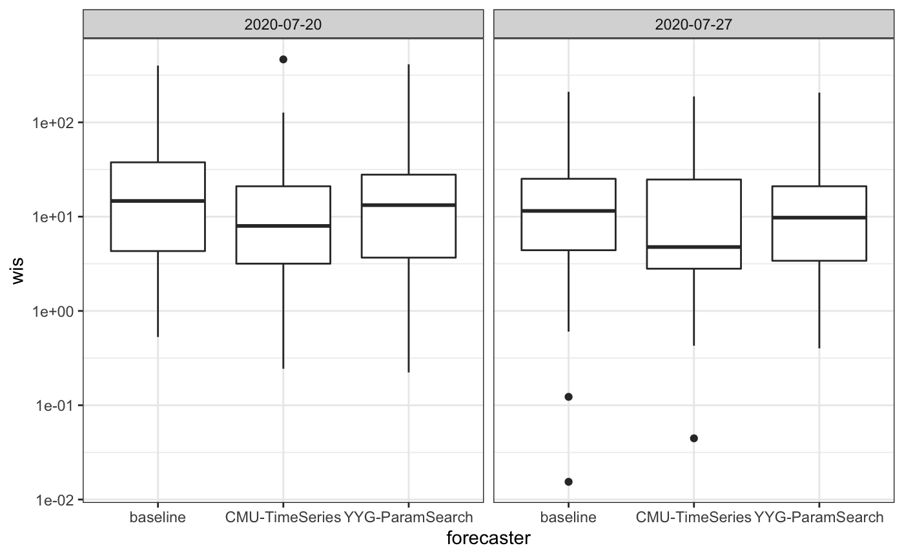
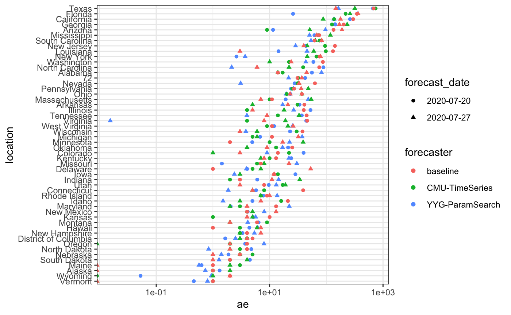
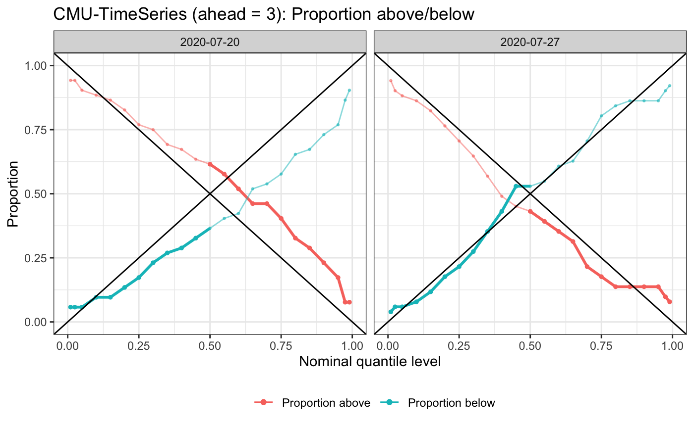
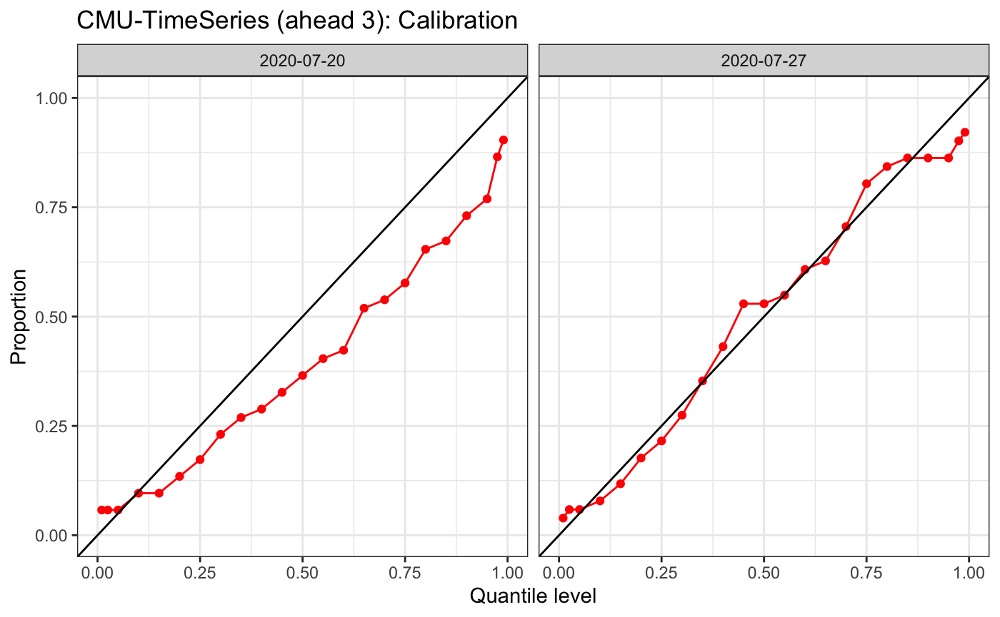
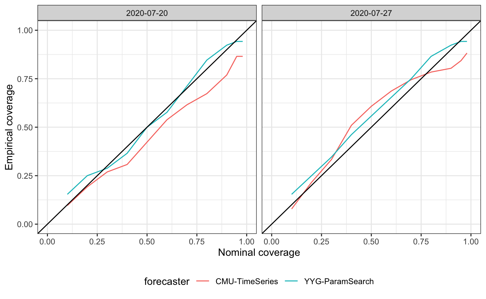
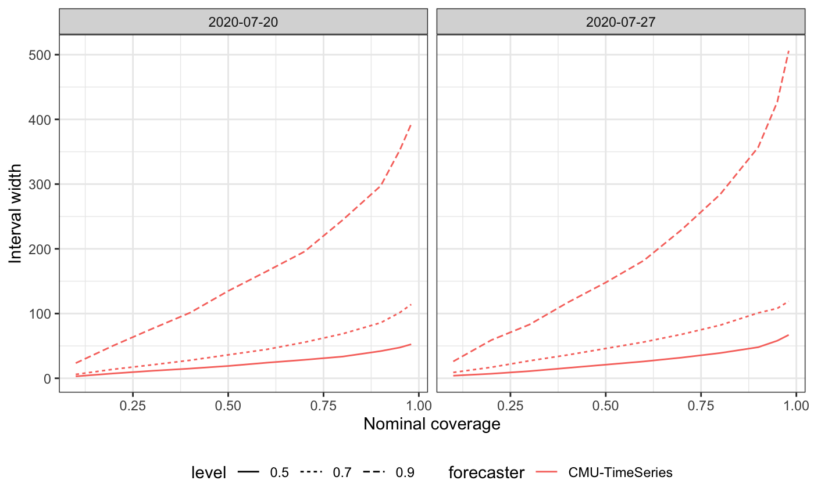

intro_vignette.RmdThe evalcast package provides the infrastructure for developing and evaluating probabilistic forecasters that are based on data obtained with the covidcast R package. A unique feature of the covidcast API is that it can retrieve data that would have been available as of a certain date. This accounts for a difficult property of working with certain COVID-19 data sources, which is that they may be backfilled (retrospectively updated). Failing to account for backfill can lead to poorly trained forecasters and overly optimistic retrospective evaluations. The evalcast package is designed to help forecasters avoid these pitfalls.
We will use the included baseline_forecaster to demonstrate how to backtest a forecaster and compare its predictions to contemporaneous forecasts submitted to CovidHub. While baseline_forecaster is very simple, it can be used as a template for creating more sophisticated forecasters.
The format of a forecaster is aligned with the CovidHub submission instructions and with the covidcast R package.
We start by specifying which signals the forecaster will be using. See here for a full list of signals available through the covidcast API. Each signal is specified by two strings: data_source and signal. Optionally, we can specify how far back in time we will want data.
library(tidyverse) signals <- tibble(data_source = "jhu-csse", signal = c("deaths_incidence_num", "confirmed_incidence_num"), start_day = "2020-06-15") signals
## # A tibble: 2 x 3
## data_source signal start_day
## <chr> <chr> <chr>
## 1 jhu-csse deaths_incidence_num 2020-06-15
## 2 jhu-csse confirmed_incidence_num 2020-06-15Within the evalcast framework, forecasters do not directly retrieve historic data. Instead, get_predictions provides only the data that would have been available at the time to the specified forecaster in order to generate retrospective predictions.
library(evalcast) library(covidcast) library(lubridate) forecast_dates <- get_forecast_dates("CMU-TimeSeries") forecast_dates_july <- forecast_dates[forecast_dates >= "2020-07-01" & forecast_dates <= "2020-07-31"] # Retrieve past predictions from CovidHub predictions_cards_yyg <- get_covidhub_predictions("YYG-ParamSearch", forecast_dates_july) predictions_cards_cmu <- get_covidhub_predictions("CMU-TimeSeries", forecast_dates_july) # Make new predictions using baseline_forecaster predictions_cards <- get_predictions(baseline_forecaster, name_of_forecaster = "baseline", signals = signals, forecast_dates = forecast_dates_july, incidence_period = "epiweek", ahead = 3, geo_type = "state")
baseline_forecaster created a list of 2 predictions cards, (one for each (forecast date, ahead) pair). Let’s look at a predictions card:
predictions_cards[[1]]
## # A tibble: 52 x 2
## location forecast_distribution
## * <chr> <list>
## 1 01 <tibble [23 × 2]>
## 2 02 <tibble [23 × 2]>
## 3 04 <tibble [23 × 2]>
## 4 05 <tibble [23 × 2]>
## 5 06 <tibble [23 × 2]>
## 6 08 <tibble [23 × 2]>
## 7 09 <tibble [23 × 2]>
## 8 10 <tibble [23 × 2]>
## 9 11 <tibble [23 × 2]>
## 10 12 <tibble [23 × 2]>
## # … with 42 more rowsForecasts are probabilistic, meaning that rather than predicting a single value, a distribution of values is generated. For example, the baseline forecaster would have predicted the following distribution in California for 1 week(s) after 2020-07-20
pc <- predictions_cards_cmu[[1]] ca_fips = covidcast::name_to_fips("California") ca_code = substr(ca_fips, 0, 2) # States are identified by a 2 character code pc[pc$location == ca_code, ]$forecast_distribution[[1]]
## # A tibble: 23 x 2
## probs quantiles
## <dbl> <dbl>
## 1 0.01 404
## 2 0.025 450
## 3 0.05 495
## 4 0.1 537
## 5 0.15 566
## 6 0.2 580
## 7 0.25 600
## 8 0.3 614
## 9 0.35 634
## 10 0.4 649
## # … with 13 more rowsNow that we’ve made these predictions, we’d like to know how well they perform. By default, evalcast uses the following three performance measures, but these can be easily substituted:
err_measures <- list(wis = weighted_interval_score, ae = absolute_error, coverage_80 = interval_coverage(alpha = 0.2))
We may now create scorecards for each forecaster’s predictions or for a filtered subset.
scorecards_yyg <- evaluate_predictions(filter_predictions(predictions_cards_yyg, ahead = 3), err_measures, backfill_buffer = 10) pcards_cmu_death3 <- filter_predictions(predictions_cards_cmu, ahead = 3, response_data_source = "jhu-csse", response_signal = "deaths_incidence_num") scorecards_cmu <- evaluate_predictions(pcards_cmu_death3, err_measures, backfill_buffer = 10) scorecards <- evaluate_predictions(filter_predictions(predictions_cards, ahead = 3), err_measures, backfill_buffer = 10)
Let’s look at the baseline_forecaster’s scorecard for 3-epiweek ahead forecasts.
scorecards[[1]]
## # A tibble: 104 x 9
## location forecast_date start end actual forecast_distri… wis
## * <chr> <date> <date> <date> <int> <list> <dbl>
## 1 01 2020-07-20 2020-08-02 2020-08-08 152 <tibble [23 × 2… 23.2
## 2 01 2020-07-27 2020-08-09 2020-08-15 141 <tibble [23 × 2… 28.0
## 3 02 2020-07-20 2020-08-02 2020-08-08 2 <tibble [23 × 2… 0.534
## 4 02 2020-07-27 2020-08-09 2020-08-15 2 <tibble [23 × 2… 0.123
## 5 04 2020-07-20 2020-08-02 2020-08-08 390 <tibble [23 × 2… 108.
## 6 04 2020-07-27 2020-08-09 2020-08-15 355 <tibble [23 × 2… 119.
## 7 05 2020-07-20 2020-08-02 2020-08-08 77 <tibble [23 × 2… 34.2
## 8 05 2020-07-27 2020-08-09 2020-08-15 65 <tibble [23 × 2… 13.5
## 9 06 2020-07-20 2020-08-02 2020-08-08 962 <tibble [23 × 2… 165.
## 10 06 2020-07-27 2020-08-09 2020-08-15 911 <tibble [23 × 2… 99.4
## # … with 94 more rows, and 2 more variables: ae <dbl>, coverage_80 <lgl>Technical note: What does backfill_buffer = 10 do? When we evaluate a forecaster in backtesting we are assuming that we know what actually occurred. However, in light of backfill, we may not trust the data for some period of time. The argument backfill_buffer allows us to specify how many days until we believe that the data has “settled down” and is unlikely to be updated further. The choice of this argument will depend on the particular signal you are forecasting.
evalcast provides a number of tools to visually assess a forecaster (including comparisons with other forecasters):
scorecards_list <- c(scorecards_yyg,scorecards_cmu,scorecards) plot_measure(scorecards_list, "wis")

plot_measure(scorecards_list, "ae", type = "dotplot") + scale_x_log10()

plot_calibration(scorecards_cmu[[1]], type = "wedge")

plot_calibration(scorecards_cmu[[1]], type = "traditional")

plot_coverage(list(scorecards_yyg[[1]], scorecards_cmu[[1]]))

plot_width(scorecards_cmu)

While the above describes incident forecasting, the same evalcast functions can also be used for cumulative forecasting.
For example, for k-day-ahead cumulative forecasting, choose a cumulative signal from covidcast (e.g., deaths_cumulative_num), set incidence_period = "day" and ahead = k.
For example, for k-week-ahead cumulative epiweek forecasting, do the same as above but with ahead = 7 * k.